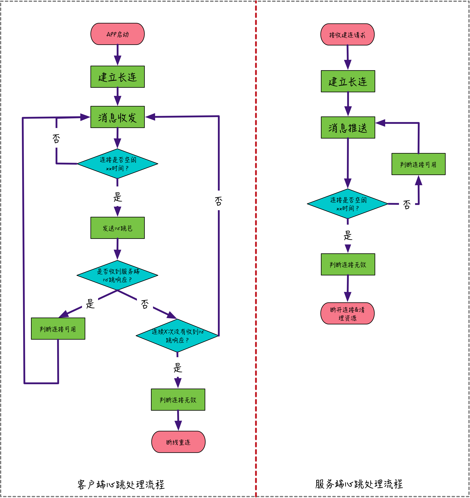

- 00 开篇词 搞懂“实时交互”的IM技术，将会有什么新机遇？.md.html
- 01 架构与特性：一个完整的IM系统是怎样的？.md.html
- 02 消息收发架构：为你的App，加上实时通信功能.md.html
- 03 轮询与长连接：如何解决消息的实时到达问题？.md.html
- 04 ACK机制：如何保证消息的可靠投递？.md.html
- 05 消息序号生成器：如何保证你的消息不会乱序？.md.html
- 06 HttpDNS和TLS：你的消息聊天真的安全吗？.md.html
- 07 分布式锁和原子性：你看到的未读消息提醒是真的吗？.md.html
- 08 智能心跳机制：解决网络的不确定性.md.html
- 09 分布式一致性：让你的消息支持多终端漫游.md.html
- 10 自动智能扩缩容：直播互动场景中峰值流量的应对.md.html
- 11 期中实战：动手写一个简易版的IM系统.md.html
- 12 服务高可用：保证核心链路稳定性的流控和熔断机制.md.html
- 13 HTTP Tunnel：复杂网络下消息通道高可用设计的思考.md.html
- 14 分片上传：如何让你的图片、音视频消息发送得更快？.md.html
- 15 CDN加速：如何让你的图片、视频、语音消息浏览播放不卡？.md.html
- 16 APNs：聊一聊第三方系统级消息通道的事.md.html
- 17 Cache：多级缓存架构在消息系统中的应用.md.html
- 18 Docker容器化：说一说IM系统中模块水平扩展的实现.md.html
- 19 端到端Trace：消息收发链路的监控体系搭建.md.html
- 20 存储和并发：万人群聊系统设计中的几个难点.md.html
- 21 期末实战：为你的简约版IM系统，加上功能.md.html
- 22 答疑解惑：不同即时消息场景下架构实现上的异同.md.html
- 结束语 真正的高贵，不是优于别人，而是优于过去的自己.md.html
- 捐赠
08 智能心跳机制：解决网络的不确定性
你好，我是袁武林。
在前面的章节里，我讲到了在即时消息场景中非常重要的两个特性：“可靠投递”和“实时性”。
为了让消息能更加实时、可靠、快速地触达到接收方，大部分IM系统会通过“长连接”的方式来建立收发双方的通信通道，这些基于TCP长连接的通信协议，在用户上线连接时，会在服务端维护好连接到服务器的用户设备和具体TCP连接的映射关系，通过这种方式服务端也能通过这个映射关系随时找到对应在线的用户的客户端，而且这个长连接一旦建立，就一直存在，除非网络被中断。
因为“长连接”方式相比“短连接轮询”，不仅能节约不必要的资源开销，最重要的是能够通过“服务端推送”，提供更加实时的消息下发。
同样，对于发送方来说，如果发送消息也能通过“长连接”通道把消息给到IM服务端，相对于短连接方式，也能省略TCP握手和TLS握手的几个RTT的时间开销，在用户体验和实时性上也会更好。
为什么需要心跳机制
“长连接”方式给我们带来了众多好处，那么要让消息通过“长连接”实现可靠投递，最重要的环节就在于如何维护好这个“长连接”。
由于这个“长连接”底层使用的TCP连接并不是一个真正存在的物理连接，实际上只是一个无感知的虚拟连接，中间链路的断开连接的两端不会感知到，因此维护好这个“长连接”一个关键的问题在于能够让这个“长连接”能够在中间链路出现问题时，让连接的两端能快速得到通知，然后通过“重连”来重新建立新的可用连接，从而让我们这个“长连接”一直保持“高可用”状态。
这个能够“快速”“不间断”识别连接可用性的机制，被称为“心跳机制”。“心跳机制”通过持续地往连接上发送“模拟数据”来试探连接的可用性，同时也让我们的连接在没有真正业务数据收发的时候，也持续有数据流通，而不会被中间的网络运营商以为连接已经没有在使用而把连接切断。
下面，我会从两个方面带你详细了解一下心跳机制在长连接维护中的必要性。
降低服务端连接维护的开销
首先，心跳机制可以让IM服务端能尽快感知到连接的变化，从而尽早清理服务端维护连接使用的资源。
对于大部分即时通讯场景，消息收发双方经常处于移动网络环境中，手机信号强弱变化及中间路由故障等，都可能导致“长连接”实际处于不可用状态。
比如：用户拿着手机进电梯了，手机网络信号忽然完全没了，长连接此时已经不可用，但IM服务端无法感知到这个“连接不可用”的情况；另外，假如我们上网的路由器忽然掉线了，之前App和IM服务端建立的长连接，此时实际也处于不可用状态，但是客户端和IM服务器也都无法感知。
我在前面讲过，之所以能够实现消息的“服务端推送”，是因为我们针对每一台上线的设备，都会在IM服务端维护相应的“用户设备”和“网络连接”这么一个映射关系，除此之外，很多时候为了节省网络开销，还会在服务端临时缓存一些没必要每次请求都携带的客户端的信息（比如：app版本号、操作系统、网络状态等），这样客户端一旦建好长连后，只需要首次携带这些信息，后续请求可以不用再携带，而是使用IM服务端缓存的这些信息。另外，在很多IM的实现上，还会在服务端维护一些“用户在线状态”和“所有在线设备”这些信息，便于业务使用。
如果IM服务端无法感知到这些连接的异常情况，会导致的一个问题是：IM服务端可能维护了大量“无效的连接”，从而导致严重的连接句柄的资源浪费；同时也会缓存了大量实际上已经没有用了的“映射关系”“设备信息”“在线状态”等信息，也是对资源的浪费；另外，IM服务端在往“无效长连接”推送消息，以及后续的重试推送都会降低服务的整体性能。
支持客户端断线重连
通过“心跳”快速识别连接的可用性，除了可以降低服务端的资源开销，也被用于支撑客户端的断开重连机制。
对于客户端发出心跳包，如果在一定的超时时间内（考虑到网络传输具有一定的延迟性，这个超时时间至少要大于一个心跳的间隔），比如连续两次发送心跳包，都没有收到IM服务端的响应，那么客户端可以认为和服务端的长连接不可用，这时客户端可以断线重连。
导致服务端没有响应的原因可能是和服务端的网络在中间环节被断开，也可能是服务器负载过高无法响应心跳包，不管什么情况，这种场景下断线重连是很有必要的，它能够让客户端快速自动维护连接的可用性。
连接保活
维护一条“高可用”的长连接，还有一个重要的任务就是尽量让建立的长连接存活时间更长。
这里你可能会问：难道在用户网络和中间路由网络都正常的情况下，长连接还可能会被杀死？
答案是：确实会。
探究这个原因的话，我可能要从IPv4说起。由于IPv4的公网IP的资源有限性（约43亿个），为了节省公网IP的使用，通过移动运营商上网的手机实际上只是分配了一个运营商内网的IP。
在访问Internet时，运营商网关通过一个“外网IP和端口”到“内网IP和端口”的双向映射表，来让实际使用内网IP的手机能和外网互通，这个网络地址的转换过程叫做NAT（Network Address Translation）。
NAT本身的实现机制并没有什么不妥，问题在于很多运营商为了节省资源和降低自身网关的压力，对于一段时间没有数据收发的连接，运营商会将它们从NAT映射表中清除掉，而且这个清除动作也不会被手机端和IM服务端感知到。
这样的话，如果没有了NAT映射关系，长连接上的消息收发都无法正常进行。而且多长时间会从NAT映射表清除，每个地方的运营商也是不尽相同，从几分钟到几小时都有。假设用户有几分钟没有收发消息，可能这个长连接就已经处于不可用状态了。
那么，如果我们的客户端能在没有消息收发的空闲时间给服务端发送一些信令，就能避免长连接被运营商NAT干掉了，这些“信令”一般就是通过心跳包来实现。
心跳检测的几种实现方式
介绍完了心跳机制的重要性，我们来学习一下如何去实现心跳检测。目前业界有三种常用的实现方法：TCP Keepalive、应用层心跳及智能心跳。下面我们分别来看一看。
TCP Keepalive
TCP的Keepalive作为操作系统的TCP/IP协议栈实现的一部分，对于本机的TCP连接，会在连接空闲期按一定的频次，自动发送不携带数据的探测报文，来探测对方是否存活。操作系统默认是关闭这个特性的，需要由应用层来开启。
默认的三个配置项：心跳周期是2小时，失败后再重试9次，超时时间75s。三个配置项均可以调整。
这样来看，TCP的Keepalive作为系统层TCP/IP协议栈的已有实现，不需要其他开发工作量，用来作为连接存活与否的探测机制是非常方便的；上层应用只需要处理探测后的连接异常情况即可，而且心跳包不携带数据，带宽资源的浪费也是最少的。
由于易用性好、网络消耗小等优势，TCP Keepalive在很多IM系统中被开启使用，之前抓包就发现，WhatsApps使用空闲期10秒间隔的TCP Keepalive来进行存活探测。
虽然拥有众多优势，但TCP Keepalive本身还是存在一些缺陷的，比如心跳间隔灵活性较差，一台服务器某一时间只能调整为固定间隔的心跳；另外TCP Keepalive虽然能够用于连接层存活的探测，但并不代表真正的应用层处于可用状态。
我举一个例子，比如IM系统出现代码死锁、阻塞的情况下，实际上已经无法处理业务请求了，但此时连接层TCP Keepalive的探针不需要应用层参与，仍然能够在内核层正常响应。这种情况就会导致探测的误判，让已失去业务处理能力的机器不能被及时发现。
应用层心跳
为了解决TCP Keepalive存在的一些不足的问题，很多IM服务使用应用层心跳来提升探测的灵活性和准确性。应用层心跳实际上就是客户端每隔一定时间间隔，向IM服务端发送一个业务层的数据包告知自身存活。
如果IM服务端在一定时间内没有收到心跳包，就认定客户端由于某种原因连接不可达了，此时就会从IM服务端把这个连接断开，同时清除相应分配的其他资源。
应用层心跳和TCP Keepalive心跳相比，由于不属于TCP/IP协议栈的实现，因此会有一些额外的数据传输开销，但是大部分应用层心跳的设计上心跳包都尽量精简，一般就几个字节，比如有些应用层心跳包只是一个空包用于保活，有的心跳包只是携带了心跳间隔，用于客户端调整下一次的心跳，所以额外的数据开销都非常小。
应用层心跳相比TCP Keepalive，由于需要在应用层进行发送和接收的处理，因此更能反映应用的可用性，而不是仅仅代表网络可用。
而且应用层心跳可以根据实际网络的情况，来灵活设置心跳间隔，对于国内运营商NAT超时混乱的实际情况下，灵活可设置的心跳间隔在节省网络流量和保活层面优势更明显。
目前大部分IM都采用了应用层心跳方案来解决连接保活和可用性探测的问题。比如之前抓包中发现WhatApps的应用层心跳间隔有30秒和1分钟，微信的应用层心跳间隔大部分情况是4分半钟，目前微博长连接采用的是2分钟的心跳间隔。
每种IM客户端发送心跳策略也都不一样，最简单的就是按照固定频率发送心跳包，不管连接是否处于空闲状态。之前抓手机QQ的包，就发现App大概按照45s的频率固定发心跳；还有稍微复杂的策略是客户端在发送数据空闲后才发送心跳包，这种相比较对流量节省更好，但实现上略微复杂一些。
下面是一个典型的应用层心跳的客户端和服务端的处理流程图，从图中可以看出客户端和服务端，各自通过心跳机制来实现“断线重连”和“资源清理”。

需要注意的是：对于客户端来说，判断连接是否空闲的时间是既定的心跳间隔时间，而对于服务端来说，考虑到网络数据传输有一定的延迟，因此判断连接是否空闲的超时时间需要大于心跳间隔时间，这样能避免由于网络传输延迟导致连接可用性的误判。
智能心跳
在国内移动网络场景下，各个地方运营商在不同的网络类型下NAT超时的时间差异性很大。采用固定频率的应用层心跳在实现上虽然相对较为简单，但为了避免NAT超时，只能将心跳间隔设置为小于所有网络环境下NAT超时的最短时间，虽然也能解决问题，但对于设备CPU、电量、网络流量的资源无法做到最大程度的节约。
为了优化这个现象，很多即时通讯场景会采用“智能心跳”的方案，来平衡“NAT超时”和“设备资源节约”。所谓智能心跳，就是让心跳间隔能够根据网络环境来自动调整，通过不断自动调整心跳间隔的方式，逐步逼近NAT超时临界点，在保证NAT不超时的情况下尽量节约设备资源。据说微信就采用了智能心跳方案来优化心跳间隔。
不过从个人角度看，随着目前移动资费的大幅降低，手机端硬件设备条件也越来越好，智能心跳对于设备资源的节约效果有限。而且智能心跳方案在确认NAT超时临界点的过程中，需要不断尝试，可能也会从一定程度上降低“超时确认阶段”连接的可用性，因此，我建议你可以根据自身业务场景的需要，来权衡必要性。
小结
简单回顾一下今天的内容：为了保证消息下发的实时性，很多即时通讯场景使用“长连接”来降低每次建立连接消耗的时间，同时避免了“短连接轮询”带来的不必要的资源浪费。
但是，由于移动网络环境错综复杂，网络状态变化、中间链路断开、运营商NAT超时都可能导致这个“长连接”处于不可用状态，而且收发双发无法感知到。
通过客户端和IM服务端建立的“心跳机制”可以快速自动识别连接是否可用，同时避免运营商NAT超时被断开的情况。“心跳机制”解决了以下三方面的问题：
- 降低服务端连接维护无效连接的开销。
- 支持客户端快速识别无效连接，自动断线重连。
- 连接保活，避免被运营商NAT超时断开。
心跳探测的实现业界大部分综合采用以下两种方式：
- TCP Keepalive。操作系统TCP/IP协议栈自带，无需二次开发，使用简单，不携带数据网络流量消耗少。但存在灵活性不够和无法判断应用层是否可用的缺陷。
- 应用层心跳。应用自己实现心跳机制，需要一定的代码开发量，网络流量消耗稍微多一点，但心跳间隔的灵活性好，配合智能心跳机制，可以做到“保证NAT不超时的情况下最大化节约设备资源消耗”，同时也能更精确反馈应用层的真实可用性。
最后给大家留一道思考题：
心跳机制中可以结合TCP的keepalive和应用层心跳来一起使用吗？
以上就是今天课程的内容，欢迎你给我留言，我们可以在留言区一起讨论。感谢你的收听，我们下期再见。
© 2019 - 2023 Liangliang Lee. Powered by gin and hexo-theme-book.